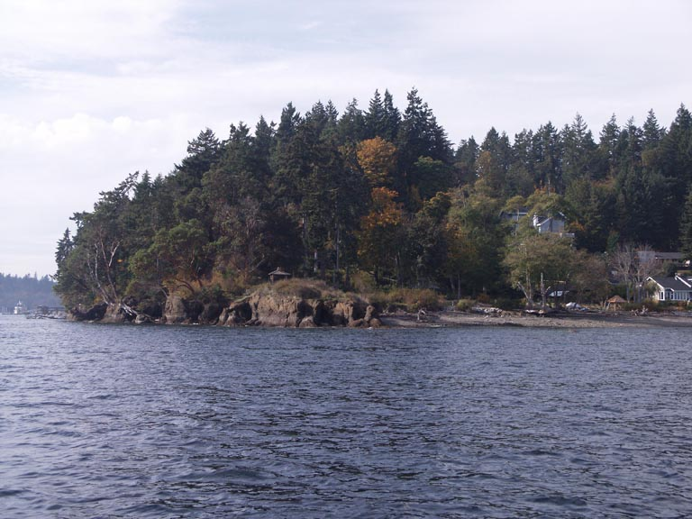
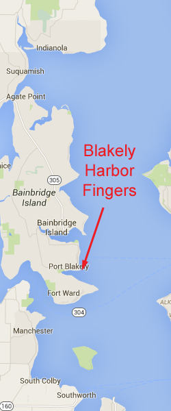
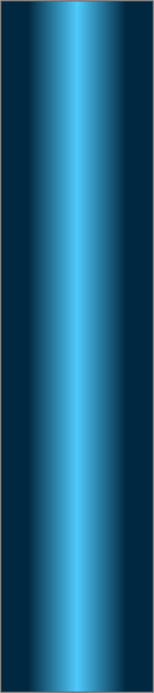
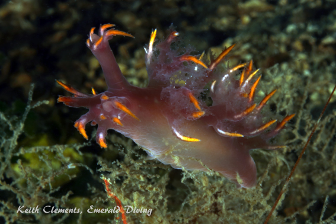
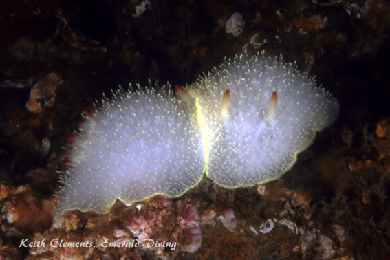
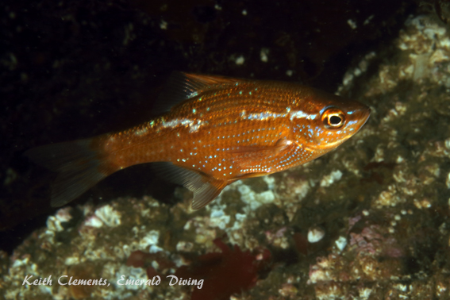

<!doctype html>
<html>
<head>
<meta charset="utf-8">
<title>Blakely Harbor Fingers</title>
<meta name="generator" content="WYSIWYG Web Builder - http://www.wysiwygwebbuilder.com">
<link href="Emerald_Diving.css" rel="stylesheet">
<link href="blakely_harbor_frame.css" rel="stylesheet">
<script>
function onChangeGoMenu2(){var a=document.getElementById('GoMenu2-select'),b=a.options[a.selectedIndex].value,c=a.options[a.selectedIndex].className;a.selectedIndex=0;a.blur();b&&(NewWin=window.open(b,c),window.NewWin.focus())};
</script>
</head>
<body>
<script>
var gaJsHost = (("https:" == document.location.protocol) ? "https://ssl." : "http://www.");
document.write(unescape("%3Cscript src='" + gaJsHost + "google-analytics.com/ga.js' type='text/javascript'%3E%3C/script%3E"));
</script>
<script>
try {
var pageTracker = _gat._getTracker("UA-15987748-1");
pageTracker._trackPageview();
} catch(err) {}</script>

<div id="container">
<div id="wb_MasterPage1" style="position:absolute;left:0px;top:2px;width:1047px;height:62px;z-index:3;">
<div id="wb_Shape1" style="position:absolute;left:0px;top:5px;width:1047px;height:57px;z-index:0;">
</div>
<div id="wb_Text2" style="position:absolute;left:20px;top:5px;width:169px;height:16px;z-index:1;">
<span style="color:#FFFFFF;font-family:Arial;font-size:13px;"><em><a href="./local_sites_ps.html">Return to Puget Sound Map</a></em></span></div>
<div id="wb_GoMenu2" style="position:absolute;left:800px;top:5px;width:225px;height:25px;z-index:2;">
<form id="GoMenu2" role="menu">
<select id="GoMenu2-select" name="GoMenu2" onchange="onChangeGoMenu2()">
<option class="_self" value="#" selected>Select a Dive Site</option>
<option class="_self" value="./alki_reef_frame.html" role="menuitem">Alki Reef</option>
<option class="_self" value="./blakely_harbor_frame.html" role="menuitem">Blakely Harbor Reef</option>
<option class="_self" value="./blakely_rock_reef_frame.html" role="menuitem">Blakely Rock Reef</option>
<option class="_self" value="./blakely_rock_wall_frame.html" role="menuitem">Blakely Rock Wall</option>
<option class="_self" value="./dabob_frame.html" role="menuitem">Dabab Seamount</option>
<option class="_self" value="./dalco_wall_frame.html" role="menuitem">Dalco Wall</option>
<option class="_self" value="./day_island_frame.html" role="menuitem">Day Island Wall</option>
<option class="_self" value="./edmonds_up_frame.html" role="menuitem">Edmonds UW Park</option>
<option class="_self" value="./flagpole_point_frame.html" role="menuitem">Flagpole Point</option>
<option class="_self" value="./four_mile_barges_frame.html" role="menuitem">Four Mile Barges</option>
<option class="_self" value="./gedney_bar_frame.html" role="menuitem">Gedney Bar</option>
<option class="_self" value="./gedney_barges_frame.html" role="menuitem">Gedney Barges</option>
<option class="_self" value="./gedney_reef_frame.html" role="menuitem">Gedney Reef</option>
<option class="_self" value="./kvi_tower_frame.html" role="menuitem">KVI Tower</option>
<option class="_self" value="./point_def_n_frame.html" role="menuitem">Point Defiance N Wall</option>
<option class="_self" value="./possession_fingers_frame.html" role="menuitem">Possession Fingers</option>
<option class="_self" value="./pulali_wall_frame.html" role="menuitem">Pulali Wall</option>
<option class="_self" value="./shilshole_wrecks.html" role="menuitem">Shilshole Wrecks</option>
<option class="_self" value="./sunrise_beach_frame.html" role="menuitem">Sunrise Beach</option>
<option class="_self" value="./three_tree_frame.html" role="menuitem">ThreeTree Point</option>
<option class="_self" value="./waterman_frame.html" role="menuitem">Waterman Wall</option>
</select>
</form>
</div>
</div>
<div id="wb_Text234" style="position:absolute;left:160px;top:568px;width:324px;height:14px;z-index:4;">
<span style="color:#000000;font-family:Arial;font-size:11px;">Double click to edit</span></div>
<div id="wb_Text1654" style="position:absolute;left:7px;top:1227px;width:477px;height:2px;z-index:5;">
&nbsp;</div>
<div id="wb_Image2" style="position:absolute;left:0px;top:58px;width:794px;height:594px;z-index:6;">
</div>
<div id="wb_Text3" style="position:absolute;left:22px;top:66px;width:527px;height:55px;z-index:7;">
<span style="color:#009300;font-family:Arial;font-size:48px;">Blakely Harbor Fingers</span></div>
<div id="wb_Text4" style="position:absolute;left:0px;top:671px;width:555px;height:2px;z-index:8;">
&nbsp;</div>
<div id="wb_Text5" style="position:absolute;left:1px;top:655px;width:657px;height:1674px;z-index:9;">
<span style="color:#FFFFFF;font-family:Arial;font-size:15px;"><strong>Topography: </strong>Artificial reef consisting of large 15-20 foot high boulder piles on a flat and sandy substrate.<br><br><strong>Puget Sound marine life rating: </strong>3<strong><br></strong><br><strong>Puget Sound structure rating: </strong>3<br><br><strong>Diving depth: </strong>55-70 feet<br><br><strong>Highlight: </strong>Potential off-slack dive. Beautiful colonies of plumose anemones. Health reserves of rockfish and greenling common to Puget Sound. <br><br><strong>Skill level: </strong>Intermediate<br><br><strong>GPS coordinates: </strong>N47° 35.808&nbsp; W122° 29.751<br><br><strong>Access by boat: </strong>Blakely Harbor fingers are situated just northeast of Blakely Harbor. Blakely Rock sits about half a mile to the east. The northeast shoreline of Blakely Harbor boasts an interesting rock formation that is readily visible at low tide. This rock formation continues underwater in an easterly direction and makes up the southern finger. Two similar fingers run north of and parallel to the southern finger. The southern and middle fingers are usually marked by dive site marker buoys. <br><strong><br>Shore access: </strong>None<br><strong><br>Dive profile: </strong>As of November 2016, there is a buoy marking this site.&nbsp; The pin for the buoy is located at the very end of the first set of fingers in about 60 feet of water.&nbsp; <br><br>The site consists of three sets of&nbsp; finger that run parallel to one another.&nbsp; As none of these structures is overly expansive, it is easy to explore two or three of these fingers on one dive.&nbsp; <br><br>All three fingers are located on a sand and cobblestone substrate that moderately slopes to the east. The southern finger is the most expansive of the three and where I start my dive. Exploring only the southern finger makes for a relatively easy dive, especially when the dive site marker buoy is in place (occasionally some low-life steals the buoy). The finger runs downslope due east.&nbsp; It gets narrower with depth before fading into the substrate at about 60 feet. <br><br>The middle finger is about 30-50&nbsp; yards north of the southern finger. The rocky structure of the middle finger becomes narrower as it cascades down to about 80 feet. The anchor block for the mooring buoy is located on the top of the north side of the finger in about 30 feet of water. <br><br>Air permitting, I sometimes venture the +75 yards to the northern finger. The northern and middle fingers start in deeper water than the southern finger. I usually cross the substrate between fingers at a depth of 40 feet to make certain I do not swim too shallow and miss the more northern fingers. The northern finger is nowhere near as expansive as its southern neighbors.<br><br>The shallow areas of the fingers are often smothered in red broadleaf kelp in summer. Noteworthy are two sheer walls on the north side of both the southern and middle fingers. These walls stand about 15-20 feet high and are covered in beautiful giant plumose anemones.<br><br>Visibility at this site sometimes leaves a bit to be desired. Restoration Point lies to the south and traps plankton, run-off, or any other particulates in the water any time a north wind is blowing. <br><strong><br>My preferred gas mix: </strong>EAN 36<br><br><strong>Current observations: </strong><br><br><em>Current Station: </em>Admiralty Inlet <br><em>Noted Slack Correction</em>: None <br><br>Current is generally manageable in this well-protected harbor, even off-slack. The fingers appear to be more susceptible to ebbing current that flooding current.&nbsp;&nbsp; The intensity of the current has varied from slight to substantial, but I have never found it to be unmanageable. I would simply stay on the finger where my boat is anchored if I encountered a strong current. The leeward side of the rock reef structure usually offers relief from the current. <br><strong><br></strong>Although this site is fairly well protected from a south wind, a north wind is a different story. A persistent north wind often generates a strong surface current over the site. On one occasion it was too strong to swim against and I had to submerge and swim underwater to make it back to the anchored boat. I normally don’t dive this site when a strong north wind is prevalent.<br><strong><br>Boat Launch:</strong> <br><br>Don Armini boat ramp (West Seattle). Approximately 5.5 miles from the dive site.<br><br><strong>Facilities: </strong>None&nbsp; <br><strong><br>Hazards: <br><br></strong>Current: Wind-generated surface current and waves from strong north winds. Occasional light to moderate swirling or waterfall current noted during flooding tides.<br></span><span style="color:#FFFFFF;font-family:Symbol;font-size:15px;"><br></span><span style="color:#FFFFFF;font-family:Arial;font-size:15px;">Boat traffic: Occasional boat traffic from Blakely Harbor, especially in summer months.<br><br><strong>Marine life: </strong>This site never blows me away from a marine life perspective, but there is plenty to see. My favorite creature to find at this site is the grunt sculpin. I often find one or two of these unique little fish in one of the many vacated giant barnacle shells at the bottom of the southern or middle fingers. Warbonnets, gunnels, crabs, or greenling eggs sometimes occupy the empty shells.<br><br>A healthy variety of colorful nudibranchs lives here, especially during summer. I often find absolutely beautiful lilac colored Dendronotus diversicolor feeding on hydroids in the deeper regions of this site. At different times I have noted white lined and golden dironas, orange spotted, pink, striped, giant, and opalescent nudibranchs, sea lemons, and Nanaimo dorids on or around the fingers. <br><br>The most picturesque part of this site is the north-facing walls on the middle fingers (in about 30 to 40 feet of water). This wall is covered with brilliant white giant plumose anemones and is quite a spectacle from below when the sun is shining through the water from above.<br></span></div>
<div id="wb_Image1" style="position:absolute;left:797px;top:58px;width:244px;height:594px;z-index:10;">
</div>
<div id="wb_Shape1431" style="position:absolute;left:669px;top:655px;width:378px;height:1690px;z-index:11;">
</div>
<div id="wb_Text12" style="position:absolute;left:692px;top:661px;width:357px;height:15px;text-align:center;z-index:12;">
<span style="color:#FFFFFF;font-family:Arial;font-size:12px;"><em>Underwater imagery from this site</em></span></div>
<div id="wb_Image3" style="position:absolute;left:679px;top:680px;width:352px;height:232px;z-index:13;">
</div>
<div id="wb_Image4" style="position:absolute;left:679px;top:915px;width:352px;height:232px;z-index:14;">
</div>
<div id="wb_Image5" style="position:absolute;left:679px;top:1150px;width:352px;height:232px;z-index:15;">
</div>
<div id="wb_Image6" style="position:absolute;left:679px;top:1385px;width:352px;height:232px;z-index:16;">
</div>
<div id="wb_Image7" style="position:absolute;left:679px;top:1620px;width:352px;height:232px;z-index:17;">
</div>
<div id="wb_Image8" style="position:absolute;left:679px;top:1855px;width:352px;height:232px;z-index:18;">
</div>
<div id="wb_Image9" style="position:absolute;left:679px;top:2090px;width:352px;height:232px;z-index:19;">
</div>
<div id="wb_Text6" style="position:absolute;left:868px;top:687px;width:164px;height:16px;text-align:right;z-index:20;">
<span style="color:#FFFFFF;font-family:Arial;font-size:13px;"><em>Variable Nudibranch</em></span></div>
<div id="wb_Text1" style="position:absolute;left:684px;top:920px;width:164px;height:16px;z-index:21;">
<span style="color:#FFFFFF;font-family:Arial;font-size:13px;"><em>Zoanthids</em></span></div>
<div id="wb_Text21121" style="position:absolute;left:689px;top:1392px;width:164px;height:16px;z-index:22;">
<span style="color:#FFFFFF;font-family:Arial;font-size:13px;"><em>Nanaimo Dorids</em></span></div>
<div id="wb_Text7" style="position:absolute;left:864px;top:1159px;width:164px;height:16px;text-align:right;z-index:23;">
<span style="color:#FFFFFF;font-family:Arial;font-size:13px;"><em>Dock Shrimp</em></span></div>
<div id="wb_Text8" style="position:absolute;left:864px;top:1627px;width:164px;height:32px;text-align:right;z-index:24;">
<span style="color:#FFFFFF;font-family:Arial;font-size:13px;"><em>Orange Spotted Nudibranch</em></span></div>
<div id="wb_Text9" style="position:absolute;left:868px;top:1862px;width:164px;height:16px;text-align:right;z-index:25;">
<span style="color:#FFFFFF;font-family:Arial;font-size:13px;"><em>Copper Rockfish (juvenile)</em></span></div>
<div id="wb_Text10" style="position:absolute;left:686px;top:2097px;width:164px;height:16px;z-index:26;">
<span style="color:#FFFFFF;font-family:Arial;font-size:13px;"><em>Kelp Perch</em></span></div>
</div>
</body>
</html>